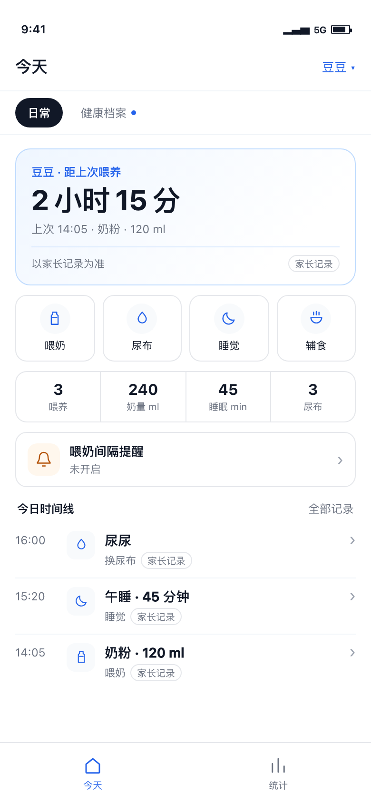
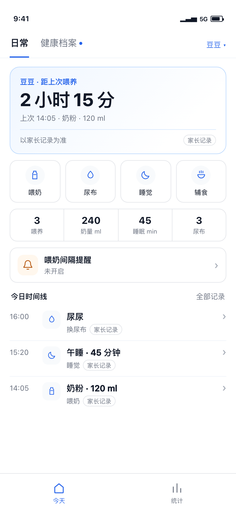
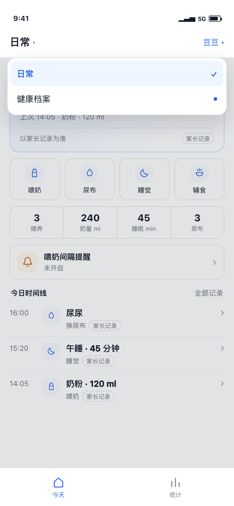

A · 当前 B3
顶部独立 segmented
appbar 下面单独一行「日常 / 健康档案」，两个域一眼可见。
多占 46px；内容页少一点高度，但最稳、最不容易误解。
同一套「今天」内容，只换 日常 / 健康档案 这一层的呈现。 四个选项的差别不在视觉，而在：占不占一行、另个域是否一眼可见、切换要几次点击。

appbar 下面单独一行「日常 / 健康档案」，两个域一眼可见。

把「日常 / 健康档案」直接放进 appbar，右边留成员切换。

标题「日常 ▾」点开下拉，切到健康档案；另个域藏在一次点击后。
打开先看到「日常 / 健康档案」两张卡；点进去才是各自的视图。
| 方式 | 空间 | 另个域可见 | 切换成本 | 适合 |
|---|---|---|---|---|
| A 顶部独立 | 多 46px | 一眼可见 | 1 次点击 | 最稳；内容页不紧、想让两个域最显眼 |
| B appbar tabs | 省 46px | 一眼可见 | 1 次点击 | 日常为主、两个域都常用；390px 宽度下最平衡 |
| C 标题下拉 | 省 46px | 藏在点击后 | 2 次点击 | 域切换低频、appbar 已经很满 |
| D 首页双卡 | 无额外行 | 一眼可见 | 2 次点击 | 两个域是两种模式，接受每次多一步 |